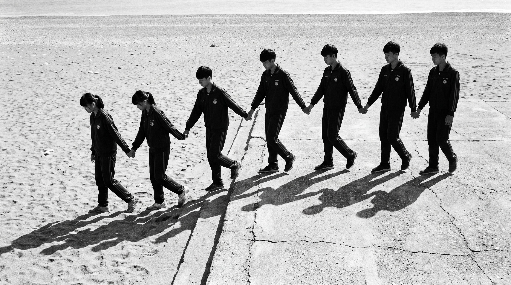
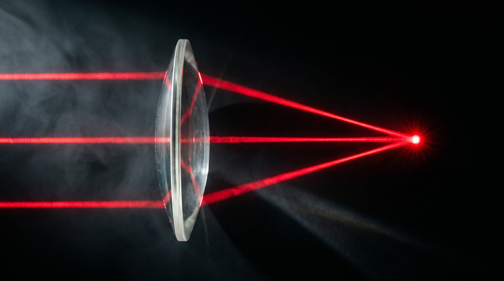

凸透鏡、凹透鏡｜用「牽手走沙灘」看懂老師小抄・任務五 透鏡
只要記一件事：光走進玻璃、水，會變慢——就像全班牽手從馬路走進沙灘。
誰先踩到沙誰先慢，整排就「折一下」換方向。鏡片的形狀，決定大家往哪裡走。
🧒 同學＝ 光
🛣️ 馬路（走得快）＝ 空氣
🏖️ 沙灘（走得慢）＝ 玻璃、水
① 斜斜走進沙灘：整排換方向

- 沙灘的邊是斜的，上面的同學先踩到沙、先變慢。
- 下面的同學還在馬路上，走得快。
- 快的追、慢的拖 → 整排換方向。
- 光在水面、玻璃表面「折一下」就是這樣。
② 中間厚的沙堆 → 大家聚到一點（凸透鏡）

- 中間的同學走過最厚的沙 → 最慢；兩邊沙薄，很快就出來。
- 整排彎成弧形，兩邊往中間靠 → 聚到焦點。
- 放大鏡、老花眼鏡、相機、一滴水、圓魚缸。
- 這次是兩邊的同學最慢，中間的很快走過去。
- 整排往外打開 → 光散開。
- 近視眼鏡、門上的貓眼：東西變小、看得更廣。
⑥ 學生可能會問
Q：為什麼光到玻璃會變慢？玻璃、水比空氣「擠」，光走起來比較費力——就像沙子讓腳陷下去。（國中只要知道「會變慢」就夠了。）
Q：光直直地、正正地照進去，也會折嗎？不會。整排同學「同時」踩到沙，一起變慢，方向不變。所以要「斜斜地」才會換方向。
Q：近視眼鏡為什麼是凹的？近視的眼睛把光聚得太早。凹透鏡先讓光散開一點，剛好聚在眼睛底部，就看清楚了。
Q：老花眼鏡為什麼是凸的？眼睛聚光的力氣不夠，凸透鏡幫忙先聚一點。
Q：水滴、圓魚缸為什麼會放大？圓圓鼓鼓＝中間厚＝小小的凸透鏡。